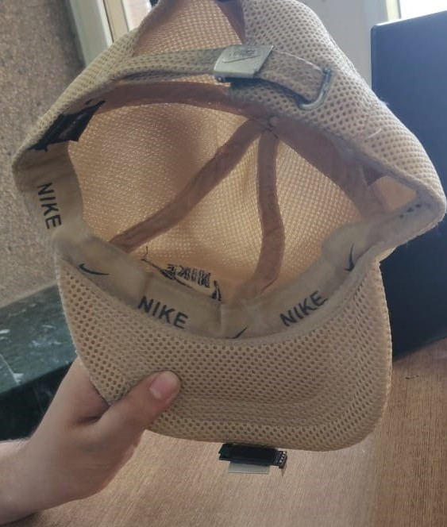
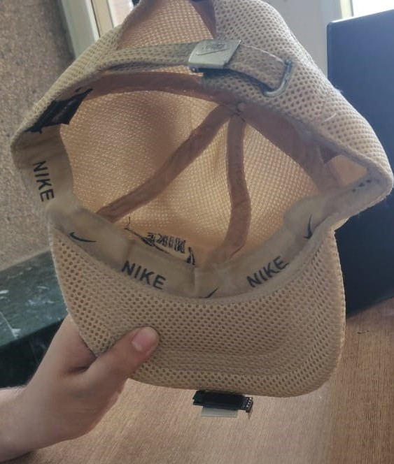
The cap is designed such that the screen does not obsruct vision while providing directions along with instructions for ease. We are currently using Open Route Service API but with proper funding we will use Google Maps API which provides better street navigation in India and also will allow us to choose destination from our mobiles.
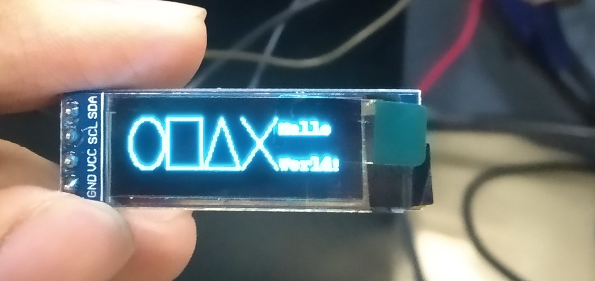 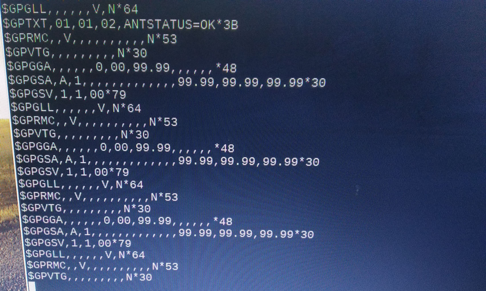
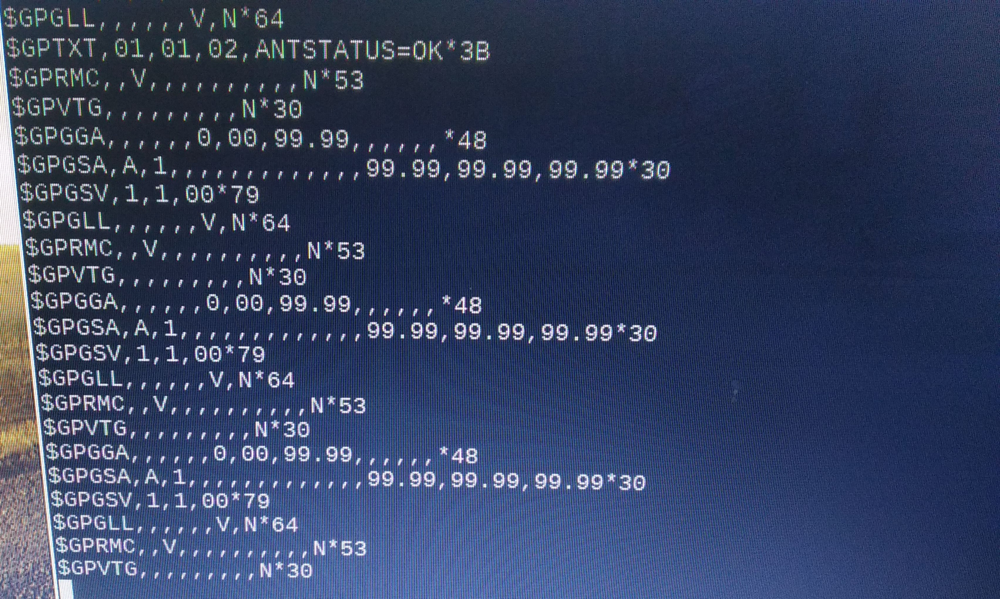
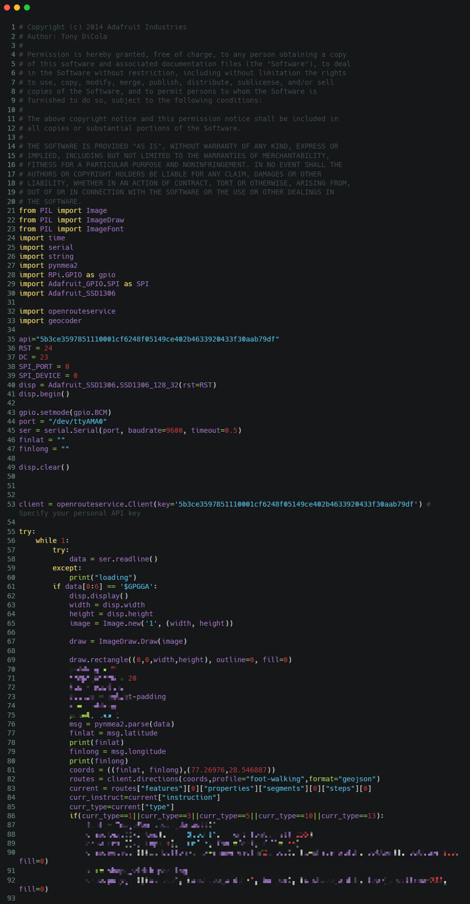 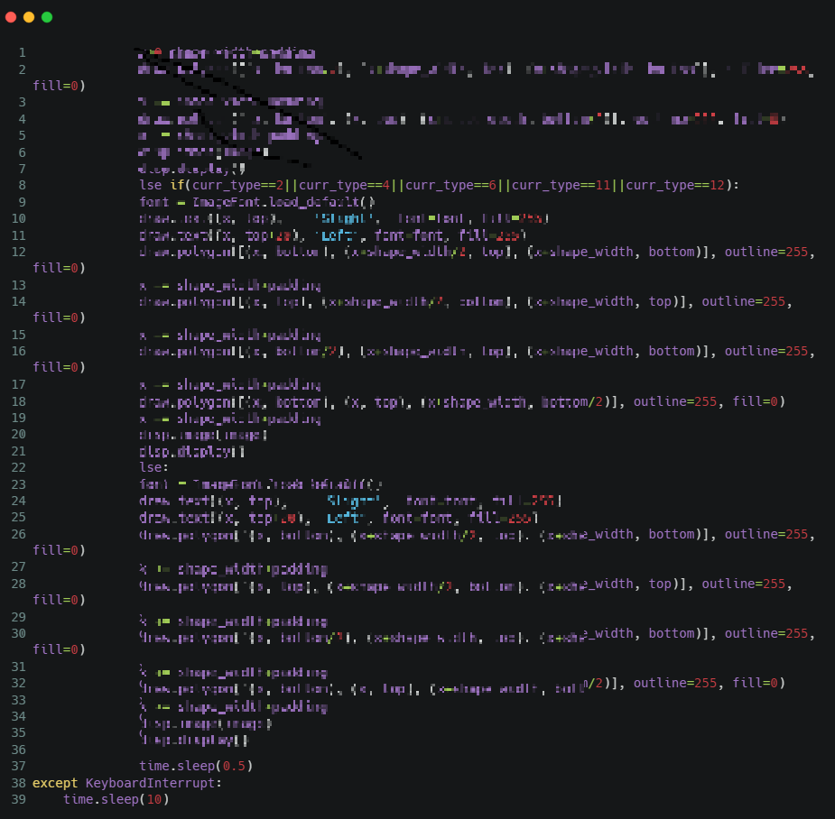
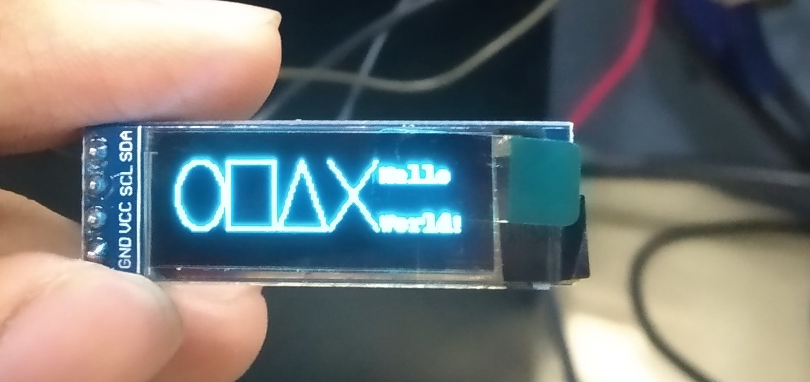
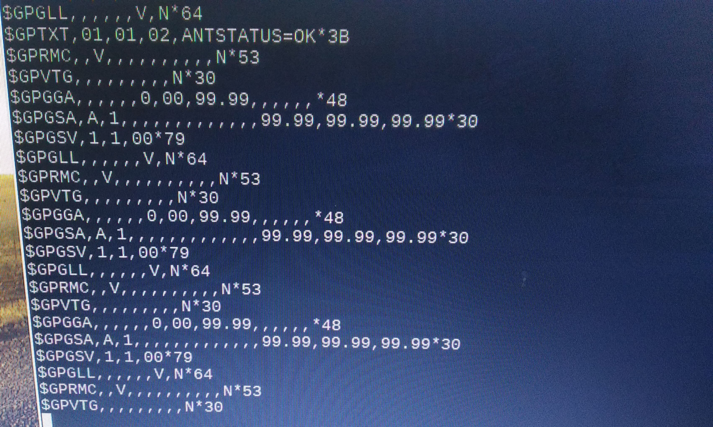
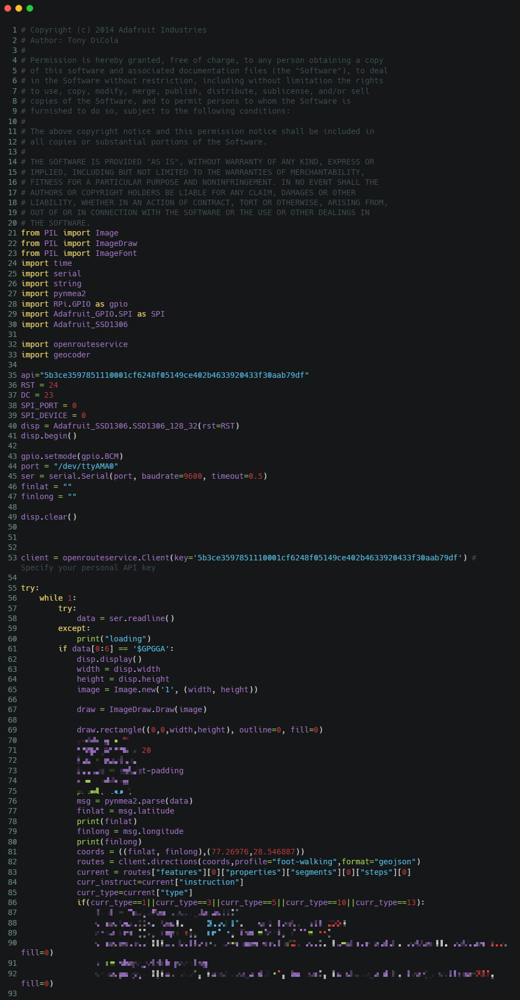 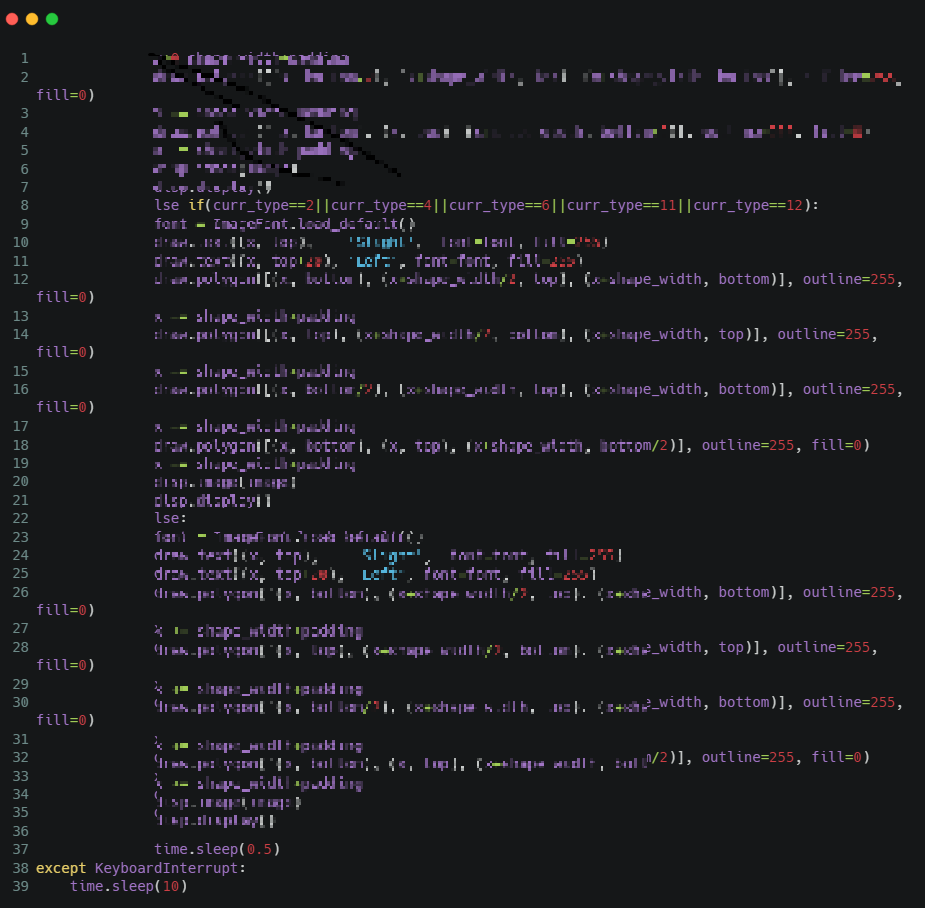
Here`s a video to demonstrate our product. There still is alot more to add in terms of what is being displayed on the screen like street names.